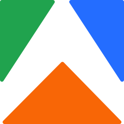
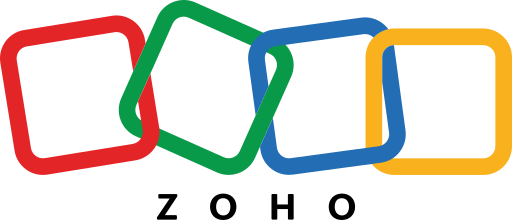
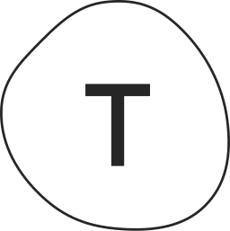

Kreatify / GTM engineering
More meetings,less chasing.
GTM engineering is the system behind your sales conversations. We find the companies most likely to buy, reach them at the right moment and get meetings on your calendar. Every tool runs on your own accounts.
In plain words
GTM means go-to-market. Here is what that means for you.
- Find
We watch for signs a company needs you: a new hire, a funding round, a comment on your post, a visit to your site.
- Reach
The right person gets a short, relevant message by email or LinkedIn, written in your voice and sent at the right time.
- Follow up
Replies are answered within minutes, meetings are booked straight into your calendar and everything is logged in your CRM.
How it works
From a buyer list to booked calls.
Six steps, set up once and improved every week. You stay in control of every message that goes out.
- 01
Define your ideal buyer
Which companies, which roles, and what tells us they might need you right now.
week 1 - 02
Build the list
Around 100 target companies to start, researched and checked, with the right contact at each.
week 1 to 2 - 03
Set up sending properly
A separate sending domain and inboxes, warmed up slowly so your messages land in the main inbox.
week 1 to 4 - 04
Launch outreach
Email and LinkedIn messages that start when a signal appears, written in your voice and approved by you.
from week 4 - 05
Replies and booking
Every reply gets an answer within minutes. Interested buyers get a booking link and a reminder.
from week 5 - 06
Improve every week
We look at what got replies and what did not, and adjust the list and the messages.
every Monday
GTM engineering stack
The tools we set up for you.
Every tool is set up on your own accounts, in your name. We only add what your buyers need, and you keep all of it.
 LinkedIn Sales NavigatorSignals and data
LinkedIn Sales NavigatorSignals and data- ApolloSignals and data
- ClaySignals and data
- PhantomBusterSignals and data

ApifySignals and data- PerplexitySignals and data
- SmartleadOutreach
- InstantlyOutreach
- lemlistOutreach
- HeyReachOutreach
 GmailOutreach
GmailOutreach WhatsApp BusinessOutreach
WhatsApp BusinessOutreach- n8nAutomation
 MakeAutomation
MakeAutomation- ZapierAutomation
 OpenAIAI
OpenAIAI ClaudeAI
ClaudeAI GeminiAI
GeminiAI HubSpotCRM and ops
HubSpotCRM and ops
Zoho CRMCRM and ops- NotionCRM and ops
 AirtableCRM and ops
AirtableCRM and ops Google SheetsCRM and ops
Google SheetsCRM and ops SlackCRM and ops
SlackCRM and ops- CalendlyMeetings
- Google CalendarMeetings
- Google MeetMeetings
- ZoomMeetings
- LoomMeetings
 CanvaContent and docs
CanvaContent and docs FigmaContent and docs
FigmaContent and docs
TypeformContent and docs Google DocsContent and docs
Google DocsContent and docs
Follow one lead through the system
- SpotSales NavigatorSaffron Labs hired a VP Sales
- ResearchClayTeam size, tools, recent news
- WriteClaudeA first line about them, in your voice
- SendSmartleadTuesday, 9:12 am
- LogHubSpotThey reply: "Let's talk"
- BookCalendlyThursday, 4:30 pm
What you get
A sales system that runs every week.
- Ideal buyer profile
Who to target, and why, written down.
- 100-company list
Researched, with the right person at each.
- Sending setup
Domain, inboxes and warm-up done properly.
- Outreach sequences
Email and LinkedIn, triggered by real signals.
- Fast replies
AI drafts answers in seconds, a person checks them.
- CRM you own
Every conversation logged in one place.
What to expect
The numbers we work towards.
- 5 to 15qualified meetings a month by weeks 9 to 12
- under 1 minfrom a new enquiry to a first reply
- 100target companies in the first list
These are targets we plan around, not promises. Your Monday report shows exactly where you are against them.
Questions
Questions about GTM.
Will this spam people?
No. We send small volumes to carefully chosen people, with messages written for them. Spam hurts your name, and your name is the point.
Do I need to buy the tools?
Some, yes, on your own accounts. We tell you exactly which ones you need and which you can skip.
I already have a CRM. Can we use it?
Yes. We work with HubSpot, Zoho, Pipedrive and others, or a simple sheet if you are just starting.
How soon do meetings start?
Usually between weeks five and eight, once your sending setup is warmed up and the first outreach is live.
Next step
Talk it through with Krish.
A 30-minute call. We look at where your business is today and tell you honestly which of our three areas would help most, if any.